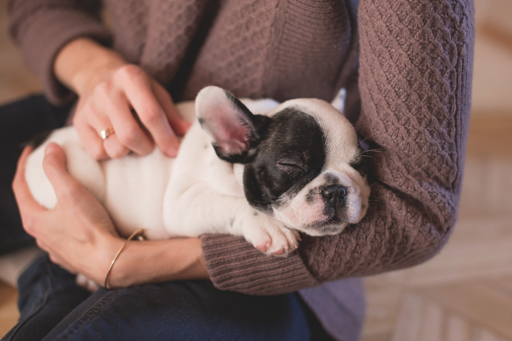
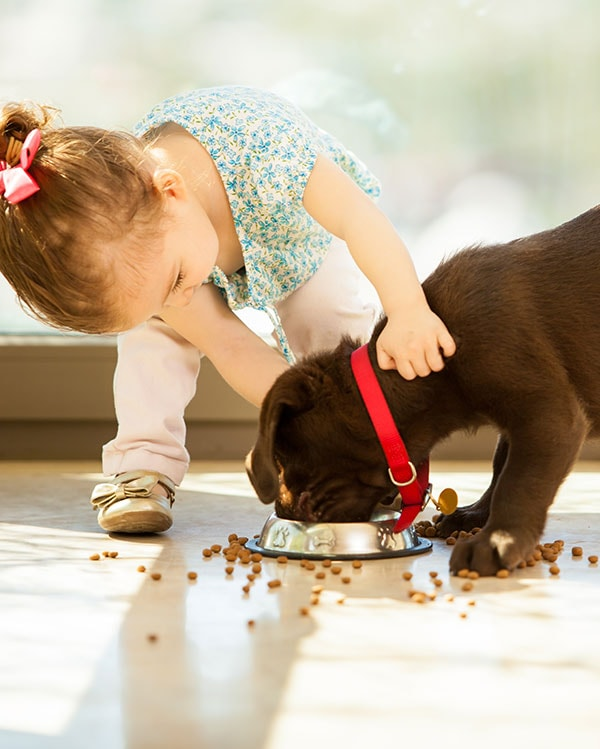

<!--  -->


<div id="volunteer">
  <div id="volunteer-text">
    <h1>Volunteer</h1>
    <p>Volunteers are vital to operations at the Furever Home Shelter. There are many ways you can help us humanely care for
      and place the more than 3,700 animals that come through the shelter each year. </p>
    <br>
    <h2>To Apply:</h2>
    <p>Attend an information session. Information sessions are held the 1st Tuesday and 1st Saturday of every month at 9:00
      am.
    </p>
    <p>At the information session you will learn more about our volunteer programs and will be able to pick up an application.
    </p>
    <p>For volunteers 18 years of age and older you must be able to commit to staying with the program for at least one year
      and must be able to volunteer a minimum of 10 hours a month.</p>
    <p>For Volunteers 16 – 17 of age you must be able to volunteer 2 hours a week every week for 4 to 6 months depending on
      the animals you want to work with.
    </p>

    <h2>New Volunteer Information Sessions</h2>
    <p>Learn more about our program and volunteer opportunities. Join us for an informational session.
    </p>
    <p>
      First Tuesday and First Saturday of every month at 9:00 am.</p>
    <p>Questions? Contact 510-881-7927. Informational sessions are held at the Shelter.</p>

  </div>
  
</div>